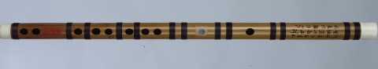

Bangdi (梆笛) 
Bangu (板鼓)
Bangzi (北梆子)
Banhu (板胡)

Bawu (巴乌)
Biangu (扁鼓)
Bianqing (编磬)
Bianzhong (编钟)
Bili (筚篥)
Bo(镲)

Chiba (南音洞箫)
Daegeum (大笒)
Daguangxian (大广弦)
Danso or Duanxiao (短箫)
Datong (花鼓戏大筒)
Dutar (都塔尔)
Duxianqin (独弦琴)
Erhu (黄梅戏主胡)
Erxian (二弦)

Fish Drum or Yugu (渔鼓)
Gaohu (高胡)

Geomungo (玄琴)
Guqin (古琴)
Hengdi (横笛)
Hulusi (葫芦丝)
Huobusi (火不思)
Janggu (杖鼓)

Jiayeqin (伽倻琴)
Liujiaoxian (六角弦)
Liuqin (柳琴)
Lusheng (芦笙)
Maguhu (马骨胡)

Nanbangzi (南梆子)

Nao (铙)

Niutuiqin (牛腿琴)
Paiban (拍板)

Pipa (琵琶)
Qudi (曲笛)
Sanxian (三弦)

Shenbo (深波)
Sheng (音笙)

Sibao (管)
Sihu (四胡)
Suona (唢呐)

Tanggu (堂鼓)
Tuhu (土胡)
Wooden fish or Muyu (木鱼)

Xiao (箫)

Xiaoluo (小锣)

Xindi (新笛)
Xiqin (中音奚琴)
Xun (埙)

Yamudi (鸭母笛)
Yangqin (扬琴)
Yazheng (雅筝)
Yehu (椰胡)
Yueqin (月琴)
Yunluo (云锣)

Zhong (钟)
Zhonghu (中胡)
Zhongruan (中阮)

Zhuihu (坠胡)